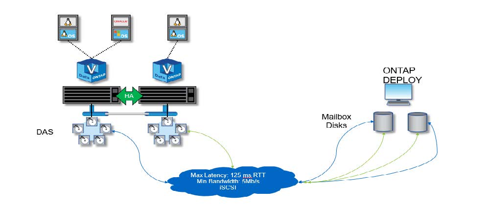
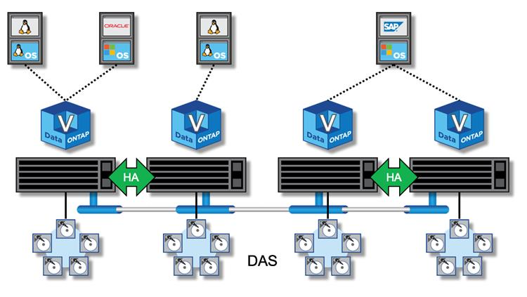

릴리즈 노트
릴리즈 노트
고가용성 구성
 변경 제안
변경 제안
환경에 가장 적합한 HA 구성을 선택할 수 있는 고가용성 옵션에 대해 알아보십시오.
고객이 엔터프라이즈급 스토리지 어플라이언스에서 일반 하드웨어에서 실행되는 소프트웨어 기반 솔루션으로 애플리케이션 워크로드를 이동하기 시작했지만 복원력과 내결함성 관련된 기대치와 요구사항은 달라지지 않았습니다. 제로 복구 시점 목표(RPO)를 제공하는 HA 솔루션은 인프라 스택의 어떤 구성 요소로부터의 장애로 인한 데이터 손실로부터 고객을 보호합니다.
SDS 시장의 상당 부분은 비공유 스토리지의 개념을 기반으로 하며, 소프트웨어 복제를 통해 서로 다른 스토리지 사일로에 여러 사용자 데이터 복사본을 저장하여 데이터 복원력을 제공합니다. ONTAP Select는 ONTAP에서 제공하는 동기식 복제 기능(RAID SyncMirror)을 사용하여 클러스터 내에 사용자 데이터의 추가 복사본을 저장함으로써 이 사내에 구축됩니다. 이 오류는 HA 쌍의 컨텍스트 내에서 발생합니다. 모든 HA 쌍에서는 사용자 데이터의 복사본 2개를 저장합니다. 하나는 로컬 노드가 제공하는 스토리지에, 다른 하나는 HA 파트너가 제공하는 스토리지에 저장합니다. ONTAP Select 클러스터 내에서는 HA와 동기식 복제가 서로 연관되어 있으며 이 둘을 독립적으로 분리 또는 사용할 수 없습니다. 따라서 동기식 복제 기능은 다중 노드 오퍼링에서만 사용할 수 있습니다.

|
ONTAP Select 클러스터에서 동기식 복제 기능은 비동기식 SnapMirror 또는 SnapVault 복제 엔진을 대체하는 것이 아니라 HA 구현의 기능입니다. 동기식 복제는 HA와 독립적으로 사용할 수 없습니다. |
ONTAP Select HA 구축 모델에는 다중 노드 클러스터(4노드, 6노드 또는 8노드)와 2노드 클러스터가 있습니다. 2노드 ONTAP Select 클러스터의 가장 중요한 기능은 브레인 분할 시나리오를 해결하기 위해 외부 중재자 서비스를 사용하는 것입니다. ONTAP Deploy VM은 구성하는 모든 2노드 HA 쌍의 기본 중재자 역할을 합니다.
두 가지 아키텍처는 다음 그림에 나와 있습니다.
-
원격 중재자와 로컬 연결 스토리지를 사용하는 2노드 ONTAP Select 클러스터 *

|
|
2노드 ONTAP Select 클러스터는 하나의 HA 쌍과 중재자로 구성됩니다. HA 쌍 내에서는 각 클러스터 노드의 데이터 애그리게이트가 동기식으로 미러링되며, 페일오버 시 데이터가 손실되지 않습니다. |
로컬 연결 스토리지를 사용하는 * 4노드 ONTAP Select 클러스터 
-
4노드 ONTAP Select 클러스터는 2개의 HA 쌍으로 구성됩니다. 6노드 클러스터와 8노드 클러스터는 각각 3개와 4개의 HA 쌍으로 구성됩니다. 각 HA 쌍 내에서는 각 클러스터 노드의 데이터 애그리게이트가 동기식으로 미러링되며, 페일오버 시 데이터가 손실되지 않습니다.
-
DAS 스토리지를 사용하는 경우 물리적 서버에 하나의 ONTAP Select 인스턴스만 존재할 수 있습니다. ONTAP Select를 사용하려면 시스템의 로컬 RAID 컨트롤러에 대한 비공유 액세스가 필요하며, 스토리지에 물리적으로 접속하지 않으면 불가능한 로컬로 연결된 디스크를 관리하도록 설계되었습니다.
2노드 HA와 다중 노드 HA 비교
FAS 어레이와 달리 HA 쌍의 ONTAP Select 노드는 IP 네트워크를 통해서만 통신합니다. 즉, IP 네트워크는 단일 장애 지점(SPOF)이며 네트워크 파티션 및 분할 뇌 시나리오로부터 보호하는 것은 설계의 중요한 측면이 됩니다. 다중 노드 클러스터는 3개 이상의 정상 노드에 클러스터 쿼럼을 설정할 수 있으므로 단일 노드 장애를 유지할 수 있습니다. 2노드 클러스터는 동일한 결과를 얻기 위해 ONTAP Deploy VM에서 호스팅하는 중재자 서비스에 의존합니다.
ONTAP Select 노드와 ONTAP 배포 중재자 서비스 간의 하트비트 네트워크 트래픽은 최소화되고 복원되므로 ONTAP 배포 VM이 ONTAP Select 2노드 클러스터가 아닌 다른 데이터 센터에서 호스팅될 수 있습니다.
|
|
ONTAP Deploy VM은 해당 클러스터의 중재자 역할을 할 때 2노드 클러스터의 핵심 부분이 됩니다. 중재자 서비스를 사용할 수 없는 경우 2노드 클러스터가 계속해서 데이터를 제공하지만 ONTAP Select 클러스터의 스토리지 페일오버 기능은 사용되지 않습니다. 따라서 ONTAP Deploy 중재자 서비스는 HA 쌍의 각 ONTAP Select 노드와 지속적으로 통신해야 합니다. 클러스터 쿼럼이 제대로 작동하려면 최소 5Mbps의 대역폭과 최대 RTT(Round-Trip Time) 지연 시간이 125ms가 필요합니다. |
중재자 역할을 하는 ONTAP 배포 VM을 일시적으로 또는 영구적으로 사용할 수 없는 경우 2차 ONTAP 배포 VM을 사용하여 2노드 클러스터 쿼럼을 복원할 수 있습니다. 이로 인해 새 ONTAP 배포 VM이 ONTAP Select 노드를 관리할 수 없지만 클러스터 쿼럼 알고리즘에 성공적으로 참여할 수 있는 구성이 생성됩니다. ONTAP Select 노드와 ONTAP 배포 VM 간의 통신은 IPv4를 통한 iSCSI 프로토콜을 사용하여 수행됩니다. ONTAP Select 노드 관리 IP 주소는 이니시에이터이고, ONTAP 구축 VM IP 주소는 타겟입니다. 따라서 2노드 클러스터를 생성할 때는 노드 관리 IP 주소에 대한 IPv6 주소를 지원할 수 없습니다. ONTAP 배포 호스팅된 메일박스 디스크는 2노드 클러스터 생성 시 적절한 ONTAP Select 노드 관리 IP 주소에 자동으로 생성 및 마스킹됩니다. 전체 구성은 설정 중에 자동으로 수행되며 추가 관리 작업은 필요하지 않습니다. 클러스터를 생성하는 ONTAP 배포 인스턴스는 해당 클러스터의 기본 중재자입니다.
원래 중재자 위치를 변경해야 하는 경우 관리 작업이 필요합니다. 원래 ONTAP 배포 VM이 손실되더라도 클러스터 쿼럼을 복구할 수 있습니다. 그러나 2노드 클러스터가 인스턴스화될 때마다 ONTAP Deploy 데이터베이스를 백업하는 것이 좋습니다.
2노드 HA와 2노드 확장 HA(MetroCluster SDS) 비교
서로 다른 거리에 2노드 액티브/액티브 HA 클러스터를 배치하고 각 노드를 서로 다른 데이터 센터에 배치할 수 있습니다. 2노드 클러스터와 2노드 확장 클러스터(MetroCluster SDS라고도 함)의 유일한 차이점은 노드 간의 네트워크 연결 거리입니다.
2노드 클러스터는 300m 거리 내에 두 노드가 같은 데이터 센터에 위치한 클러스터로 정의됩니다. 일반적으로 두 노드는 동일한 네트워크 스위치 또는 ISL(Interswitch Link) 네트워크 스위치 세트에 대한 업링크를 가지고 있습니다.
2노드 MetroCluster SDS는 노드가 물리적으로 300m 이상 분리된 클러스터(다양한 객실, 서로 다른 건물 및 데이터 센터)로 정의됩니다. 또한 각 노드의 업링크 연결은 별도의 네트워크 스위치에 연결됩니다. MetroCluster SDS에는 전용 하드웨어가 필요하지 않습니다. 그러나 환경은 지연(RTT의 경우 최대 5ms, 지터의 경우 5ms) 및 물리적 거리(최대 10ms)에 대한 요구 사항을 준수해야 합니다.
MetroCluster SDS는 프리미엄 기능이며 프리미엄 라이센스 또는 프리미엄 XL 라이센스가 필요합니다. Premium 라이센스는 소규모 및 중간 규모 VM과 HDD 및 SSD 미디어 생성을 모두 지원합니다. Premium XL 라이센스도 NVMe 드라이브 생성을 지원합니다.
|
|
MetroCluster SDS는 로컬 연결 스토리지(DAS)와 공유 스토리지(vNAS) 모두에서 지원됩니다. vNAS 구성은 일반적으로 ONTAP Select VM과 공유 스토리지 간의 네트워크 때문에 지연 시간이 더 길어집니다. MetroCluster SDS 구성은 공유 스토리지 지연 시간을 포함하여 노드 간에 최대 10ms의 지연 시간을 제공해야 합니다. 즉, 공유 스토리지 지연 시간은 이러한 구성에서 무시할 수 없기 때문에 Select VM 간의 지연 시간만을 측정하는 것은 적절하지 않습니다. |